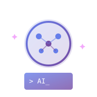

先體驗「AI 帶你拆步驟＋一起做」的感覺
我會先推薦 Antigravity，原因很簡單：它比較像有人幫你「拆步驟＋帶你做」，而不是只丟一段答案。
我最常用它做三件事：

我最常用 Claude Code（整合在 VS Code），因為它更像「在專案裡幫你一起改」：能沿著 repo 結構走，比較適合做重構、補測試、修 bug、補文件。
我最常的搭配方式：
我會把其他工具當成特定場景補位，而不是每個都硬學。
我的原則：工具會換，懂原理最重要。
三個立刻有效的技巧
我用 AI 最大的心得是：先把需求寫成一頁文件，AI 產出會穩非常多。
因為 AI 最容易翻車的情況是：需求在腦袋、聊天、零碎訊息裡。它只能猜，然後就會「看起來合理但其實不對」。
最小需求文件通常只要包含：
不要一次改很多。先要計畫，再要最小修改，立刻跑起來驗證。
這是我最穩的改 code 節奏：
我不會直接問「怎麼修」，而是問：可能原因有哪些（按機率排序）+ 每個原因最簡單怎麼驗證。
讓 AI 從聊天變成可重複的工具
這三個概念，是我把 AI 從「一次性聊天」升級成「可重複流程」的關鍵。
把常見任務做成 skill，例如：產出需求文件、產出測試計畫、產出 code review checklist。
我常用的 rule：
讓 AI 透過標準介面連到工具（repo、文件、資料庫），不是只能嘴砲。
別急著看懂每一行，先試著「驗證結果」。
我自己的做法是：
不要只貼錯誤訊息，要加上「我做了什麼」。
完整的問法包含三部分：
先保存（git commit），再請 AI 幫你整理。
我的整理流程：
用對方式，可以省很多 token。
我的省錢技巧：
讓 AI 告訴你「完成後應該看到什麼」。
驗證三步驟：
我用 AI 開發最大的收穫不是「寫得更快」，而是：把做事方式變成可重複的流程（文件先行、技能化、規則化、工具化），再用跑起來驗證把風險壓下來。
實際流程：
整個過程展示了：先聊清楚需求 → 產出文件 → 分步實作 → 每步驗證。